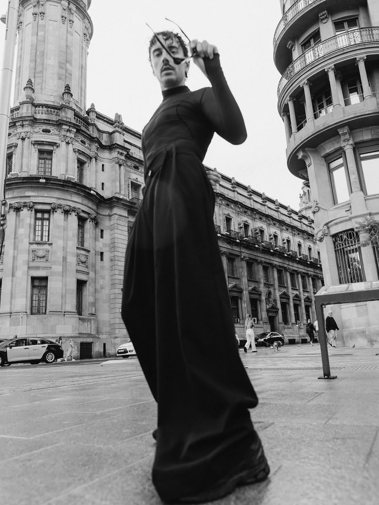

Jij,
vol karakter.
Een portret kan stil zijn en toch veel vertellen. Licht, gebaren en een gevoel voor de omgeving — foto’s die ruimte laten voor jouw persoonlijkheid.

Van dichtbij.
Expressief zwart-wit, krachtige architectuur en warm natuurlijk licht. Verschillende sferen, met de persoon altijd centraal.
Een beetje richting.
Helemaal jezelf.
We beginnen bij hoe je je in de foto’s wilt voelen. Een persoonlijk portret, een editoriaal idee of een creatief profiel vraagt steeds om een andere sfeer. Ik geef richting aan licht, locatie en beweging, zodat jij in het moment kunt blijven.
Portretsessies kunnen buiten, in de stad of in een voor de shoot geregelde studio plaatsvinden. Ik werk in heel Nederland, waaronder Amsterdam, Rotterdam, Utrecht, Den Haag. Eventuele studiohuur bespreken we apart.
- Samen een sfeer en visuele richting bepalen
- Begeleiding bij houding, expressie en beweging
- Een bewuste bewerking in kleur of zwart-wit
- Een bewerkte selectie, met vooraf afgesproken gebruik
ongeveer 60 minuten
Indicatieve tarieven. De collectie, levering en totaalprijs spreken we vóór de boeking af.
Een gevoel in beweging.
Korte films uit de collectie. Druk op afspelen om te kijken.
Misschien vraag
je je dit af.
Heb ik modelervaring nodig?
Nee. We bespreken de sfeer en werken tijdens de sessie samen. Kleine bewegingen en veranderingen in houding zijn vaak genoeg voor een expressief portret.
Mag ik de foto’s zakelijk gebruiken?
Vertel waarvoor je de foto’s wilt gebruiken, bijvoorbeeld een persoonlijk profiel, creatief portfolio of bedrijfscampagne. Het gebruik en een eventuele commerciële licentie nemen we op in het voorstel.
Kunnen we in een studio fotograferen?
Ja, als dat bij het idee past kunnen we een studio regelen. Beschikbaarheid, locatiekosten en eventuele extra benodigdheden spreken we vooraf af.
Zijn de foto’s in kleur of zwart-wit?
We bespreken je voorkeur en de sfeer van de sessie. Mijn portfolio bevat warme filmische kleuren en expressief zwart-wit. De uiteindelijke bewerking volgt het verhaal.
Sommige momenten
wil je bewaren.
Vertel me wat je voor ogen hebt. Een datum, een plek, een gevoel — daar beginnen we.
Laten we herinneringen maken